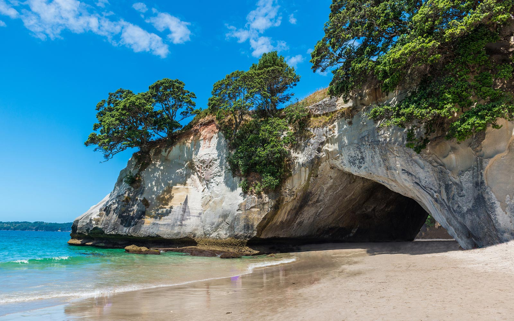
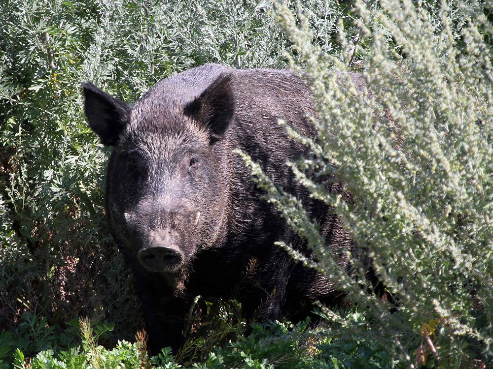

I. The Republic of Xemnas is an island found in between the north and south Atlantic ocean.
II. In the middle of the island, there is the community.
a. The Community is surrounded by forests
III. Outside the forest there is a beach.
IV. There is a pier on the west beach.
a. This is an industrial pier.
1. The scaffolding of the pier is full of:
I. Clams
II. Muscles
III. Oysters
V. The climate of the island is cool, but not freezing.
a. We can swim in the sea
1. we can harvest crustaceans and any other sea creatures that are edible when cooked.
VI. The East Beach for Ceremonies of the Dead.
a. This is where we bury the dead.
1. Every January the 25th we honor the dead.

VII. The South Beach is the warmest.
a. This is where we hunt fish and some crustaceans.
VIII. On the South Beach, there is an Energy Plant.
a. As the Republic of Xemnas, we produce energy from:
1. Crustacean Shells
2. Solar energy,
3. Wind energy (Windmills)
IX. In the forest there are boars.
a. The boars are used to produce coats and blankets for the community.
b. The boars used to feed people allergic to fish and crustaceans.
X. Insects and plants, that are in the forests, are used for producing clothes:
a. Silk
b. Cotton